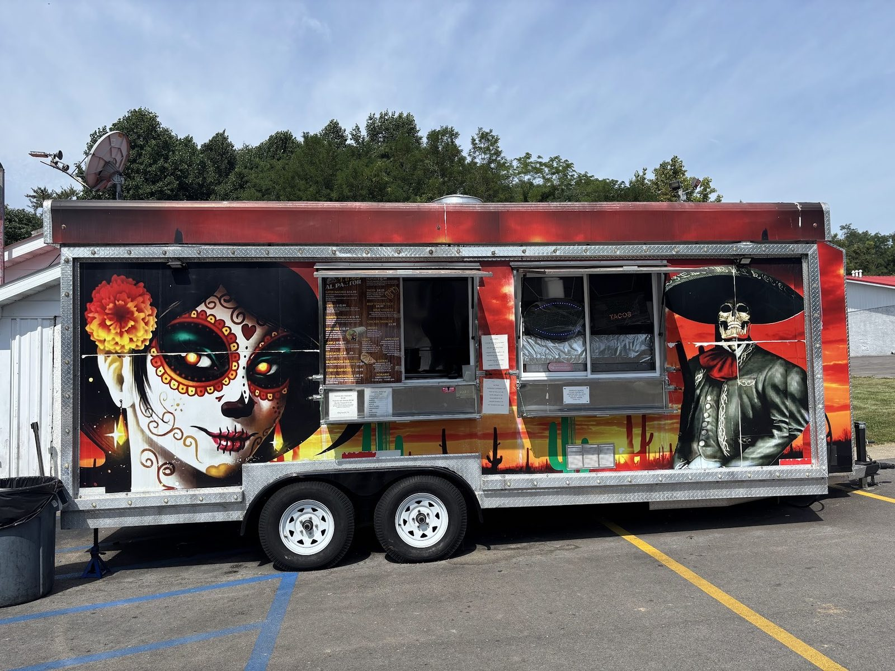

Street tacos
Pastor, chorizo, birria. Large tacos, two is usually plenty.
Al pastor, chorizo and birria tacos, huge burritos, and food that tastes home cooked.

Where to find us
2920 S Leonard Springs Rd, Bloomington, IN 47403
Mon 11 AM–10 PMTue 11 AM–10 PMWed 11 AM–10 PMThu 11 AM–10 PMFri 11 AM–1 AMSat 11 AM–10 PMSun Closed
DirectionsOpen till 1 AM on Fridays
Find the truck
Closed Sundays. Open until 1 AM Fridays. Pre-order online or get DoorDash.
Order this
What to order first.
Pastor, chorizo, birria. Large tacos, two is usually plenty.

The Monster burrito and the steak burrito stuffed with meat and cheese, plus meat, mushroom and super quesadillas.

Tamales steamed in the husk, on the starters list next to chips with salsa, queso or guacamole.


4.7 ★ · 130 Google reviews
Delectable. Fresh. Mouthwatering. Craving inducing. I had the pleasure of visiting this beautifully decorated Mexican food truck today on the recommendation of a friend. This is not chain quality food. This feels and tastes more like home cooked. The portions are HUGE and the price is more than fair! The employee who took my order was very friendly. It's a totally different game when you love what you do.
Absolutely amazing! Got a steak burrito! Super big and super full of meat and cheese. Not a single nasty grissle piece either! Got beef nachos too, super fresh and crispy. Best mexican around! Definitely better than most sit down places. Will be goung more often!!
Tried for the first time tonight and it’s officially our new favorite Mexican restaurant! We had a chicken burrito and tacos (pastor, chorizo, birria). The burrito and birria tacos were our favorite! All their food tastes far more authentic than the ‘larger’ Mexican restaurants in Bloomington. Hate that we’ve waited so long to try! Our new weekly spot, for sure!
Meet the crew
A painted truck with a sugar skull and a skeleton mariachi on the side. The red and black wrap is hard to miss.
Home cooked taste, not chain. Huge portions, tacos big enough that two is plenty, and a friendly face at the window.